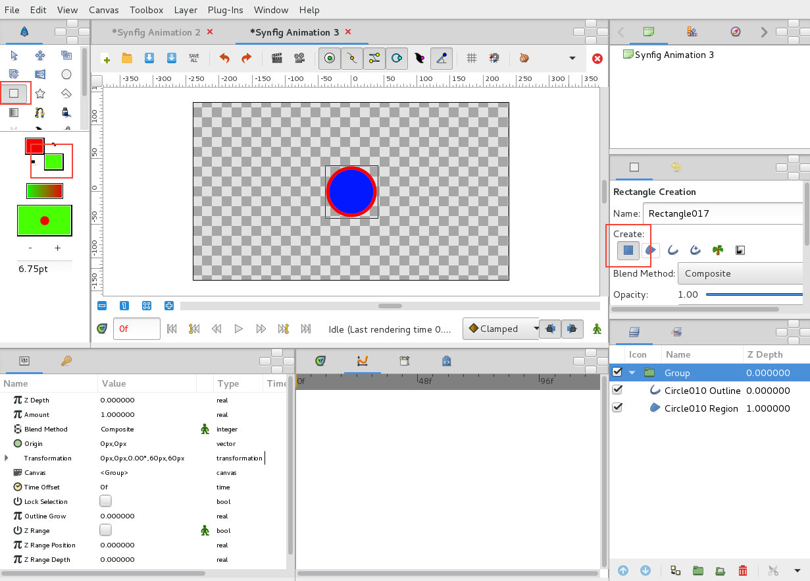

Um Início rápido no Synfig
Desenhar
1. Vamos começar por desenhar uma região com contorno e com forma circular. Ative a ferramenta para desenhar círculos. No painel de configuração da ferramenta (lado direito da interface), ative as opções Create Region Layer e Create Outline Layer. No exemplo, escolhemos vermelho para a Outline (contorno) e azul para a Region (preenchimento).
2. As duas layers criadas foram agrupadas numa Group Layer (botão direito do rato em cima da janela de layers). Para facilitar, foi selecionada a layer da Outline e inserimos 0px no X e Y (parâmetro Origin) para alinhar a origem do grupo com a das layers inseridas no grupo. Como a Region está linkada com a Outline, basta alterar a origin da Outline.
3. Vamos criar uma parede. Desta feita, foi ativada a ferramenta para desenhar retângulos e a opção Create Rectangle Layer. Como não vamos deformar a parede, não precisamos de vários pontos (disponíveis na Region), basta um Rectangle. Esta "parede" não vai estar inserida dentro do Group Layer!
4. Selecione o Group Layer criado e mova-o para o lado esquerdo do palco.
Animar
5. Vamos começar a animar a nossa cena. Avance até à frame 12, ative o modo de animação e mova o Group Layer de forma similar à imagem abaixo. Na janela da timeline, no parâmetro Transformation da Group Layer deverão ter surgido 2 waypoints: um na frame 0 e outro na 12.
Repare que a parede está por cima porque na janela das layers o Rectangle está por cima do Group. Troque a ordem para corrigir.
6. Recue uma frame (para a frame 11), selecione a Outline Layer e movimente um dos pontos muito ligeiramente. O ideal é conseguir largar o ponto no mesmo local onde estava :) Estamos a utilizar a funcionalidade de inserção automática de waypoints. Na realidade, queremos que a forma circular seja mantida até à frame 11.
Depois, avance até à frame 12 e manipule os pontos para inserir um "squash" na bola.
7. Posicione-se na frame 13, tem o Outline layer selecionado, clique com o botão direito do rato em cima do waypoint que está na frame 11 (armazena a forma circular) e Duplicate. Agora, na frame 13 tem uma forma circular similar à da frame 11.
Na frame 13, selecione o Group Layer e reposicione a bola como na imagem abaixo.
8. Avance até à frame 16 e reposicione o Group seguindo a imagem. Se quiser, pode duplicar o waypoint que está na frame 0 para garantir que o Group vai exatamente para a posição inicial.
Finalmente, antes de exportar, adicione um retângulo branco como fundo.
Exportar
Depois de clicar no botão com a claquete, escolha onde pretende gravar e o nome do ficheiro (incluindo extensão). No nosso caso, gravamos no Desktop um ficheiro com o nome "bola.gif".
Escolhemos Auto no motor de renderização.
Na aba Time, definimos 12 fps (temos poucas frames para utilizar o "clássico" 24 fps...) e o final na frame 20 (não precisamos de renderizar frames sem movimento...)